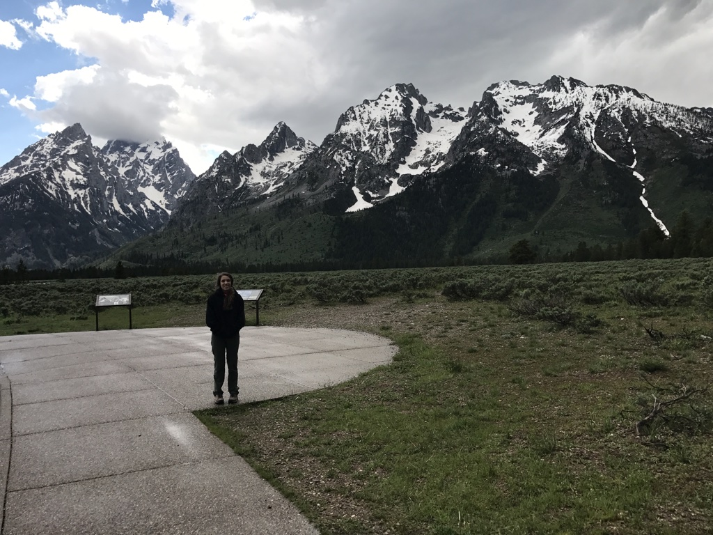
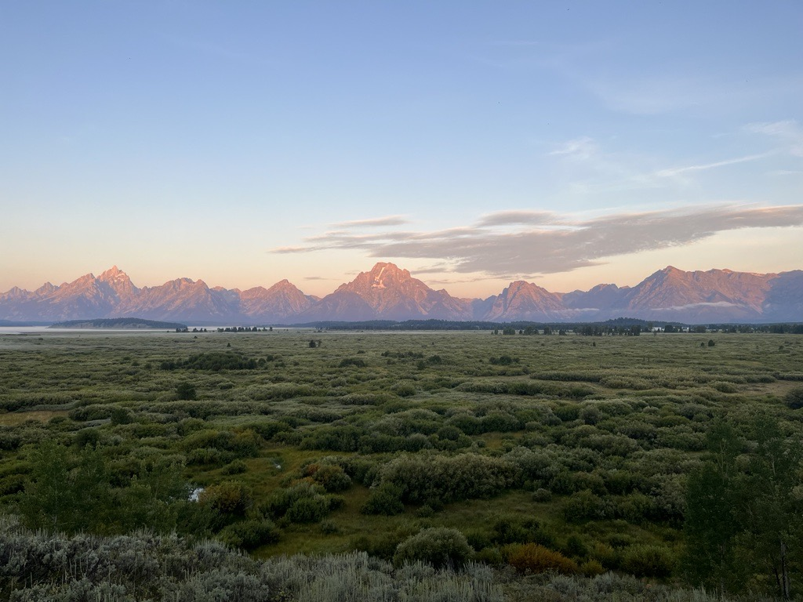
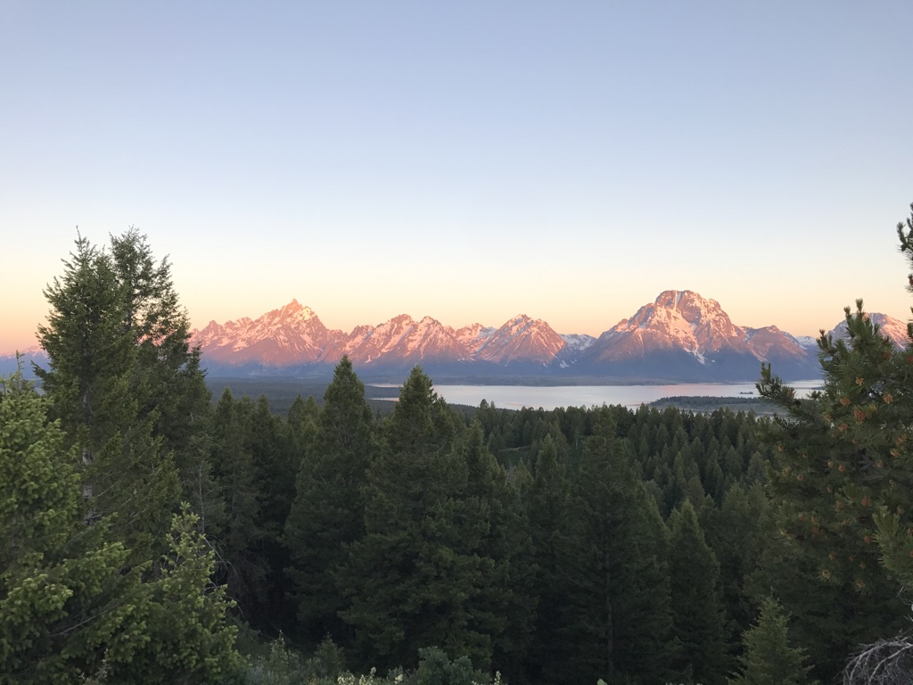
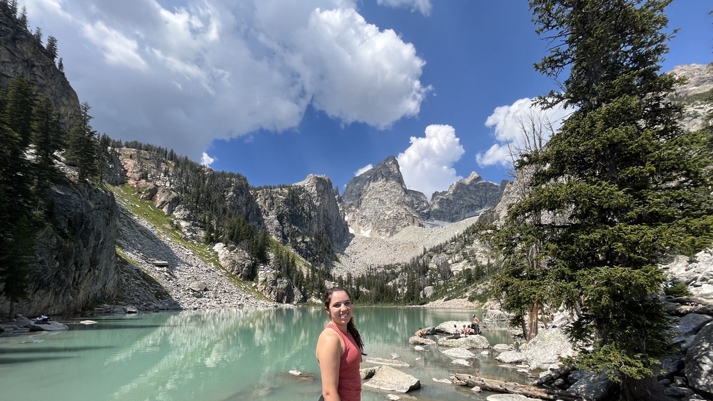

This is a picture of my favorite place on Earth:
Grand Teton National Park

Here are some of my own pictures from over the years:
My 18th Birthday! June 20th
The Tetons are known for their three large defined peaks (seen in the first image), but Mt. Moran is my favorite. Recognizable by it's flat top, it is balanced, beautiful, and grounding.
Sunrise at Jackson Lake Lodge, 2022
I'm not a morning person, but I will always wake up early for a mountain sunrise :)
Sunrise at Signal Mountain, 2017
Fun fact: I have been to The Tetons five times.
Delta Lake, 2022
When I was 16, my uncle decided to take my mother, my brother, and I on our first road trip out west. Ever since this trip, I have been chasing the mountains.